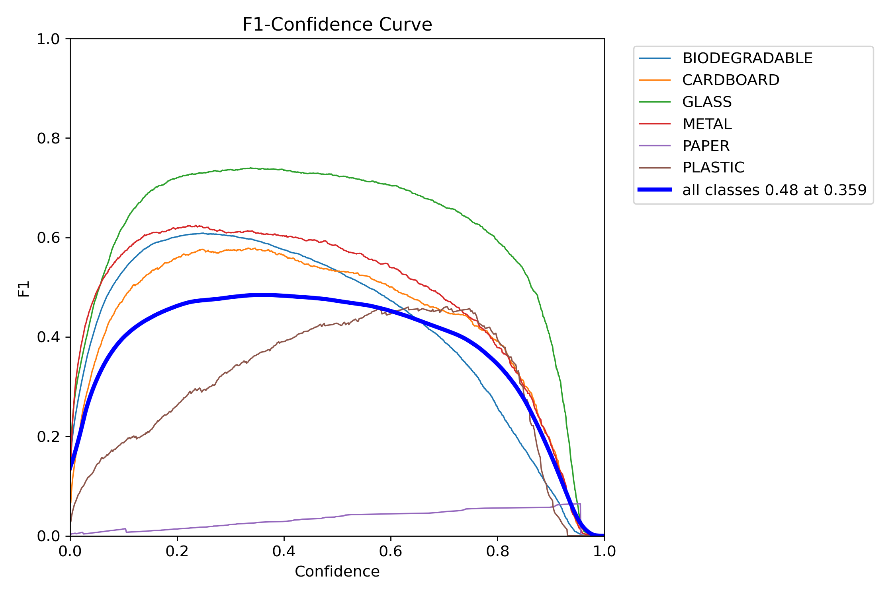
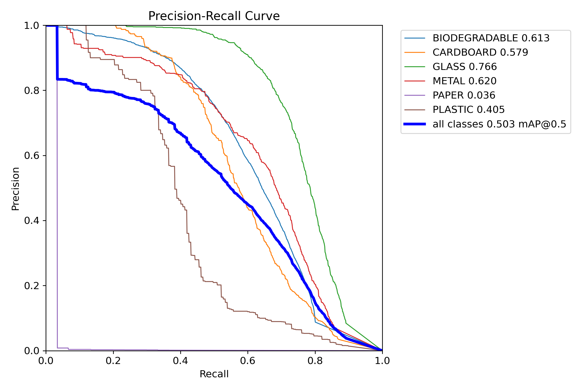
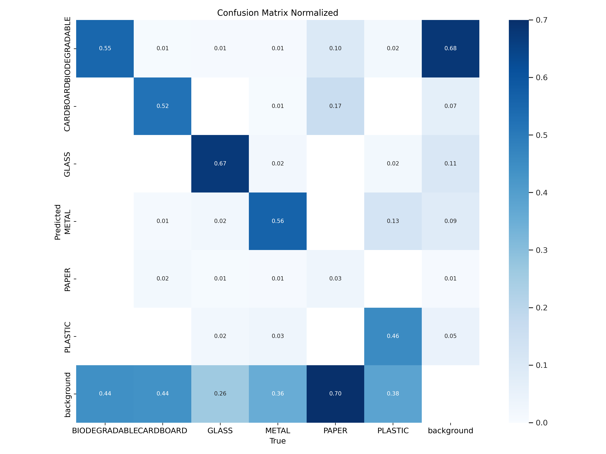

Object Classified as - {{ classification_result }}
YOLOv8 vs VGG16
YOLOv8 is an advanced model for real-time object detection, known for its high speed and accuracy. In contrast, VGG16 is a more traditional deep learning model, widely used for image classification, with an accuracy of 69.7%.
YOLOv8's accuracy surpasses that of VGG16, making it more effective for applications requiring fast and precise object detection in real-time.
YOLOv8 Performance metrics curves



VGG16 Accuracy: 69.7%
VGG16 accuracy achieved on the validation set is 69.7%.
While this is respectable, it does not match the superior performance of YOLOv8, which is designed for real-time object detection and has significantly higher accuracy and speed in such tasks.
Waste Classification and Disposal Guide
Metal
Description: Recyclable material commonly used for cans, tools, and appliances.
Disposal Instructions: Take to a metal recycling center or place in your curbside recycling if accepted. Clean off any food residue.
Paper
Description: Commonly recyclable, often used in packaging, printing, and cleaning products.
Disposal Instructions: Place in paper recycling bins. Avoid recycling wet or food-soiled paper.
Plastic
Description: Synthetic material used in packaging, bottles, and containers.
Disposal Instructions: Recycle in designated plastic bins. Check if your local recycling accepts the specific plastic type.
Biodegradable/Organic
Description: Organic waste such as food scraps and yard waste that decomposes naturally.
Disposal Instructions: Compost if possible. Alternatively, dispose in a green waste bin if available.
Cardboard
Description: Thick paper material commonly used in packaging and shipping.
Disposal Instructions: Flatten and place in cardboard recycling bins. Keep it dry for better recycling.
Glass
Description: Material used for bottles, jars, and certain packaging.
Disposal Instructions: Rinse and recycle in designated glass bins. Avoid breaking before recycling.
Batteries
Description: Used in various devices, containing hazardous materials.
Disposal Instructions: Recycle at battery collection centers. Do not dispose of in regular trash.
E-Waste
Description: Electronic waste, including old gadgets, appliances, and devices.
Disposal Instructions: Dispose of at e-waste recycling centers. Avoid throwing in regular trash.
Clothes
Description: Textile waste, including old clothes and fabrics.
Disposal Instructions: Donate if in good condition, or recycle at textile recycling centers.
Light Bulbs
Description: Bulbs used in lighting that may contain hazardous materials.
Disposal Instructions: Recycle at designated collection centers. Avoid breaking before disposal.
 {% endif %}
{% if result_image %}
{% endif %}
{% if result_image %}
 }}) {% endif %}
{% endif %}